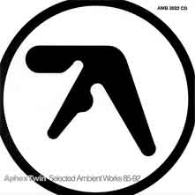
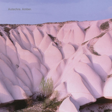
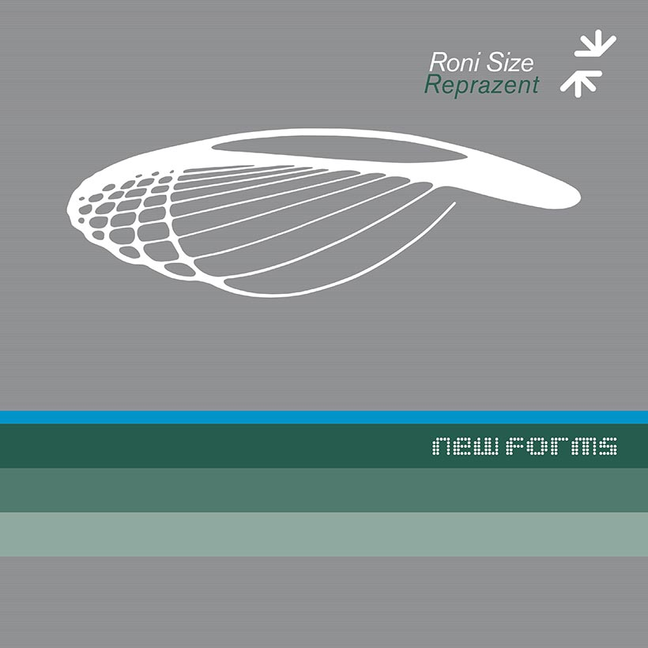
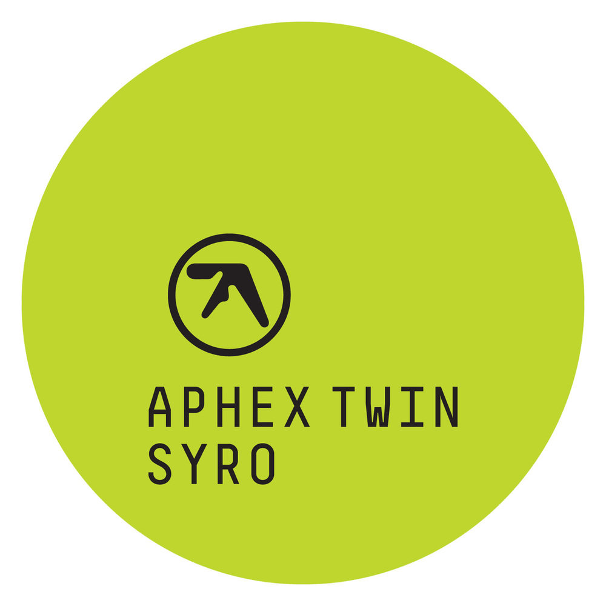
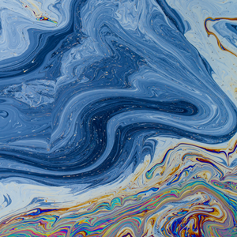

Альбомы
Жанры
/
Альбомы
/
Исполнители
/
Послушать
Обратная связь
/
Главная
Содержание
Навигация
Альбомы
1990-e
До 1995
После 1995
2000-e
2010-e
1990-е
До 1995
 Aphex twin -
Selected Ambient Works 85–92
 Autechre -
Amber
После 1995
Roni Size -
New Forms
2000-е
Aphex twin -
Drukqs
Burial -
Untrue
2010-е
 Aphex twin -
Syro
 Floating points -
Crush

.png) Aphex twin - Drukqs
Aphex twin - Drukqs Burial - Untrue
Burial - Untrue